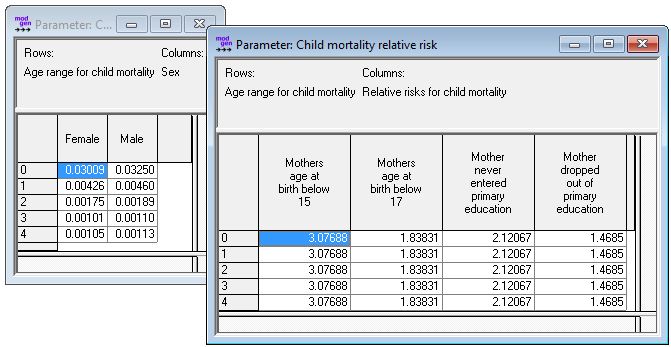
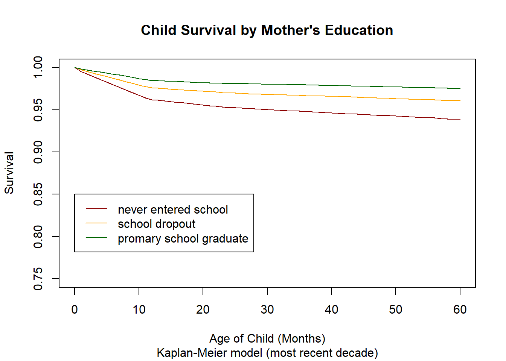
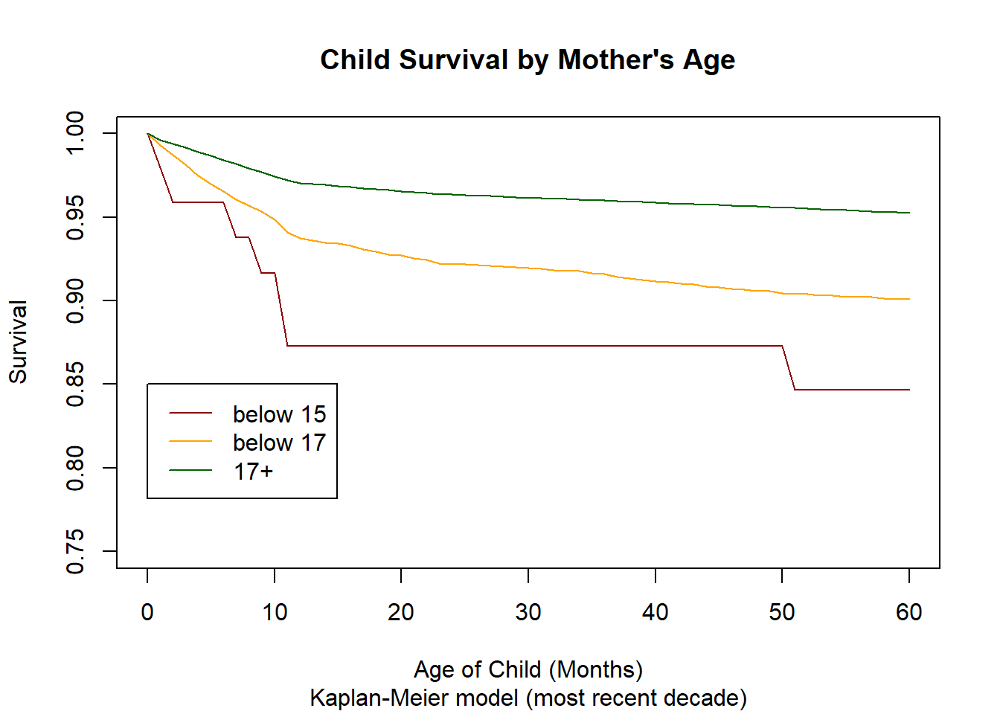
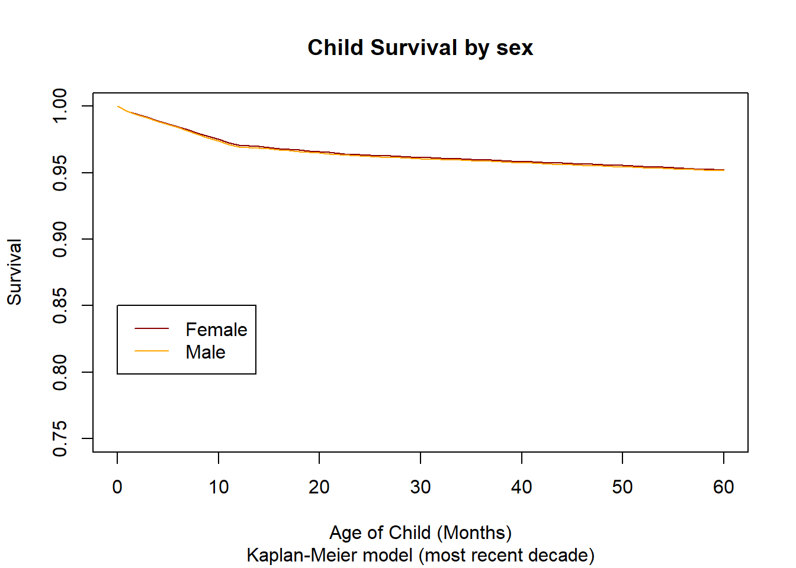
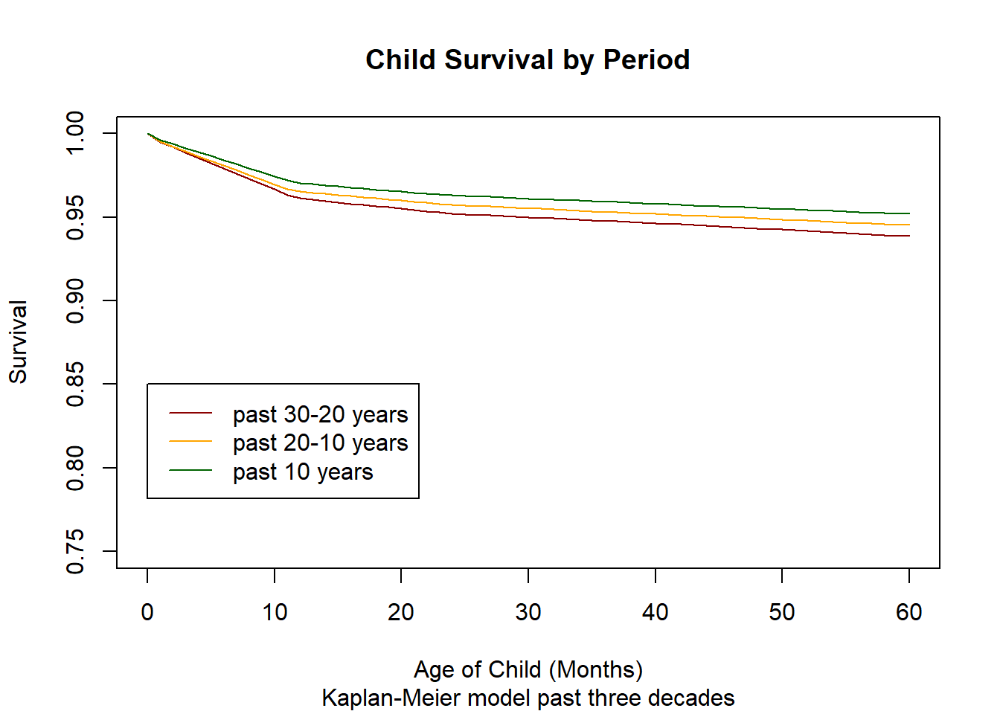

1.10. Script 10: Child Mortality¶
Child mortality is an optional module which, when activated, replaces the general mortality module for ages 0-4. The model is based on a proportional hazard regression models. Baseline risks are mortality by age and sex. Relative risks are mother’s age and mother’s education. In addition to these parameters, users can define time trends different from the overall mortality trends.
1.10.1. File Output¶
The R code below produces three parameters tables as a Modgen .dat text file:
- Child mortality base risk by age and sex
- Child mortality relative risks by age, mothers education, mothers age at birth
- Child mortality trend by age and year

1.10.2. Code¶
1.10.2.1. Setting up Data and Analysis by Mothers Education¶

1.10.2.2. Analysis by Age of Mother¶

1.10.2.3. Analysis by Sex¶

1.10.2.4. Analysis by Period¶

1.10.2.5. Hazard regression¶
1.10.2.6. Summary of coefficients¶
SAMPLE OUTPUT FROM IMAGINARY COUNTRY ABC
Covariate W.mean Coef Exp(Coef) se(Coef) Wald p
factor(r_period)
0 0.348 0 1 (reference)
1 0.248 0.107 1.113 0.015 0.000
2 0.174 0.203 1.224 0.016 0.000
3 0.230 0.390 1.477 0.014 0.000
factor(r_educmo)
0 0.219 0 1 (reference)
1 0.179 0.397 1.487 0.022 0.000
2 0.603 0.899 2.458 0.018 0.000
factor(r_agemo)
0 0.980 0 1 (reference)
1 0.019 0.453 1.574 0.029 0.000
2 0.001 1.097 2.996 0.080 0.000
factor(M_MALE)
0 0.500 0 1 (reference)
1 0.500 0.013 1.014 0.011 0.216
Events 34044
Total time at risk 2651467
Max. log. likelihood -164751
LR test statistic 5380.94
Degrees of freedom 8
Overall p-value 0
1.10.2.7. Baseline hazards¶
SAMPLE OUTPUT FROM IMAGINARY COUNTRY ABC
(.., 1] (1, 2] (2, 3] (3, 4] (4, ...]
[1,] 0.01575439 0.003816716 0.001953527 0.001943953 0.001894747